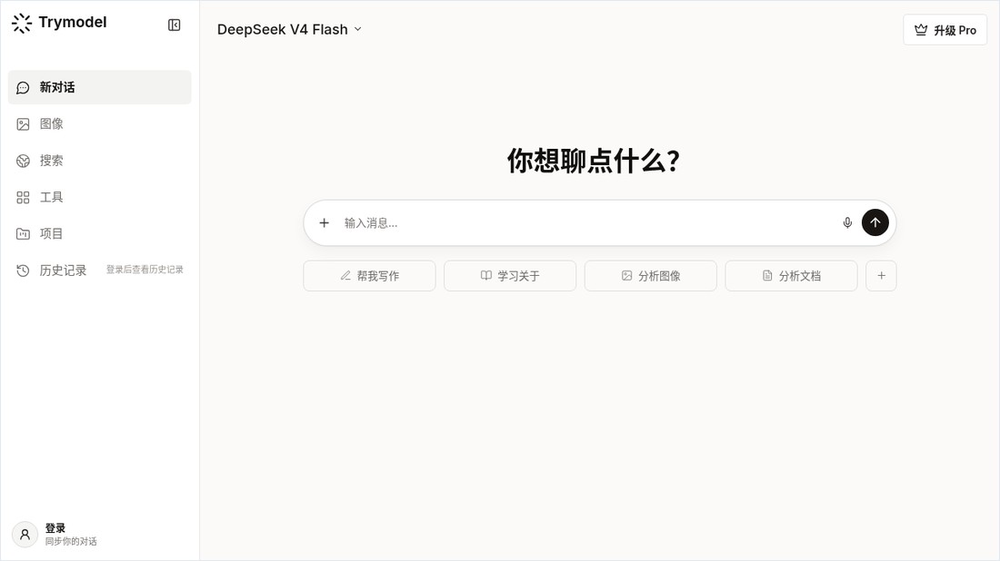
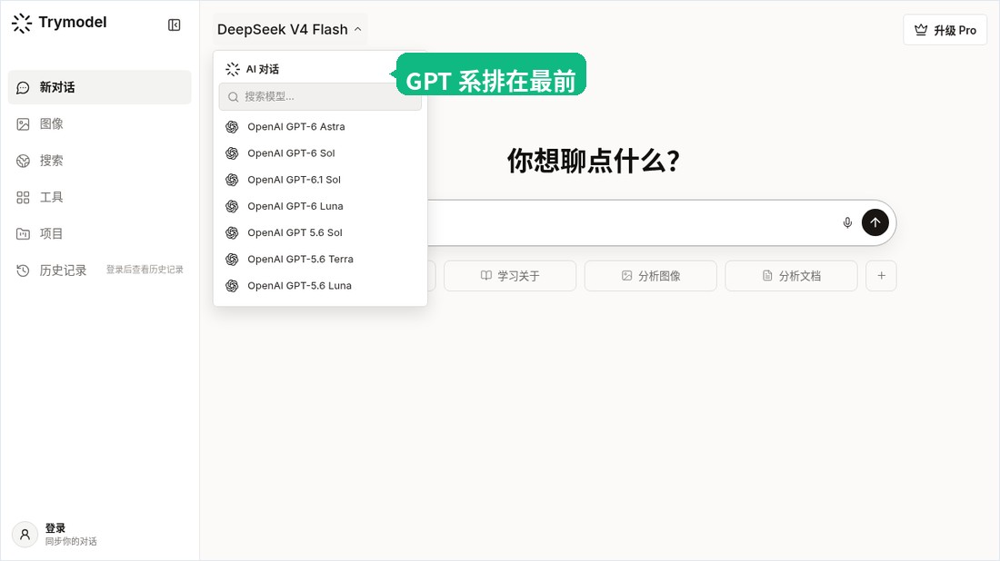
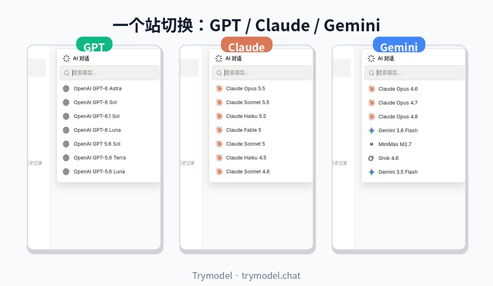

在 trymodel.chat 一站试用 Gemini 3.7 Flash、GPT-5.6、GPT Image 2、Claude Fable 5.1 与 DeepSeek / Grok 最新模型



新模型几乎每周都在刷屏：Gemini Flash 连续迭代，GPT-5.6 拆成多档，图片侧又出现 GPT Image 2，Claude、DeepSeek、Grok 也在同步换代。问题不在「听没听说过」，而在能不能用同一个入口、同一道真实任务，把它们挨个试完。
Trymodel（https://trymodel.chat/）把聊天、生图和搜索放在一个工作区：打开站点就能选模型发消息；需要海报或产品图时进图片页；需要对照多家输出时，不必再开一堆官方会员页。下面按家族梳理站内文档与当前可选模型，并说明怎么切换、什么场景选哪一档。文中能力描述以 trymodel.chat 博客与站内模型列表为准；列表会随上游更新，以你打开时下拉里的名称为最终依据。
Trymodel 是什么、怎么免费上手
根据站点说明（llms.txt），Trymodel 的定位是：在一个平台上与多家 AI 模型聊天、创作和搜索。主要入口包括：
- 聊天：https://trymodel.chat/chat（多模型对话、历史、切换）
- 生图：https://trymodel.chat/image（提示词、比例、模型）
- 定价：https://trymodel.chat/pricing（订阅与额度；页面写明可访问 25+ 高端模型，对话中途可切换）
- 博客：https://trymodel.chat/blog（发布说明与用法指南）
免费路径（可先试再决定是否升级）：
- 直接打开 https://trymodel.chat/ ，未登录也可进入对话界面。
- 站点默认聊天模型会落到 DeepSeek V4 Flash 一类试用友好线路（以页面顶栏当前显示为准）。
- 在模型下拉里搜索
Claude、Gemini、GPT、DeepSeek、Grok，先挑 Flash / Haiku / Luna 等更轻的一档做同一道题。 - 需要连续对话历史、更高档模型或优先速度时，再登录；付费档见定价页（周/月/年一次性购买说明以页面为准）。
- 官方也整理了免费对比工作流：Try AI Model Free——强调用真实任务、同一提示词、再追问一轮，而不是只看第一句「听起来很自信」的回答。
不要上传密码、API Key、未脱敏客户资料或未公开合同到任何聊天服务。
Gemini 3.7 Flash：面向 Coding 与 Agent 的 Flash 线
站内中文专题：Gemini 3.7 Flash 正式发布，谷歌真的急了。文章整理了官方对 Gemini 3.7 Flash 的定位：面向 Coding、Agent 与企业自动化工作流；相对上一代 Flash，软件工程与多步工具调用相关成绩有明显抬升，同时强调速度与调用成本仍是 Flash 的核心卖点。文末体验入口指向 https://trymodel.chat/ 。
在 Trymodel 里怎么找：
- 打开 https://trymodel.chat/chat
- 点击输入区上方的模型名称，打开下拉
- 搜索
Gemini或Flash
说明：博客专题写的是 Gemini 3.7 Flash；当前聊天模型列表里，Google 线还会出现 Gemini 3.5 Flash / 3.6 Flash / 3.8 Flash 以及 Gemini 3 Pro / 3.1 Pro 等展示名（以你当下拉列表为准）。做 Coding、Agent 或多步工具调用时，优先选最新的 Flash；长文档、多模态对照可再试 Pro 档。
适合：高频改代码、网页开发草稿、需要反复 tool call 的自动化流程，以及对延迟和成本敏感的日常任务。
GPT-5.6：Sol / Terra / Luna，按任务选档
站内指南：GPT-5.6 怎么用？从模型选择到高质量对话的一份实用指南。另一篇产品向解读 The Best AI Model No Longer Exists 说明：OpenAI 将 GPT-5.6 拆成多档（文中提到 Sol / Terra / Luna），「一个旗舰包办一切」的用法正在过时。
当前 Trymodel 聊天列表中可见（展示名以列表为准）：
| 展示名 | 大致用法 |
|---|---|
| OpenAI GPT-5.6 Terra | 日常均衡：写作、分析、一般编程 |
| OpenAI GPT 5.6 Sol | 更重推理、难题与复杂编码时可对比 |
| OpenAI GPT-5.6 Luna | 更偏速度与高频短任务 |
同页还可搜到 GPT-5.5 及更早 GPT 线，方便对照。选模型时建议：复杂分析写清背景与验收标准；改代码贴最小复现与完整报错；处理文件时要求引用页码或单元格——指南中的「角色 / 目标 / 背景 / 约束 / 验收」五段式提示词，在 https://trymodel.chat/chat 里直接复用即可。
适合：结构化写作、调试、上传 PDF/表格后的引用式问答，以及需要在同一对话里连续追问的工作流。
GPT Image 2：比例、提示词与小步迭代
生图专题：GPT Image 2 怎么生成图片？比例、提示词和迭代方法一次讲清。入口：https://trymodel.chat/image ，在图片模型中选择 gpt-image-2 / GPT Image 2。
实用流程（与站内指南一致）：
- 先定比例再写画面：如 1:1 头像图标、3:2 横向配图、2:3 海报竖图。
- 四层提示词：主体 → 场景 → 视觉（光、材质、镜头）→ 约束（文字位置、禁忌元素）。
- 画面文字尽量短，并写明位置与对比度；长文案更稳妥的做法是先出干净底图再后期叠字。
- 一次只改一个变量（主体 → 构图 → 灯光材质 → 文字细节），方便复用成功提示词。
同页图片模型目录中，除 GPT Image 2 外，还可看到 Nano Banana / Nano Banana Pro、Seedream、Grok Imagine Image 等选项（以图片页当前列表为准）。像素尺寸与导出格式以页面实际返回为准，不要仅因提示词写了「4K」就当作原生 4K 交付。
适合：海报、产品图、封面、需要可读短文案的包装示意。
Claude：Fable 5.1 与 Opus · Sonnet · Haiku 5.5
在模型下拉搜索 Claude，当前可见主推档包括：
| 展示名 | 定位（按站内列表与常见用法） |
|---|---|
| Claude Fable 5.1 | 最重推理、长链路 Agent；难题、长跑 coding / 研究 |
| Claude Opus 5.5 | 主力 Agent 编码与知识工作 |
| Claude Sonnet 5.5 | 速度与智能的平衡，日常问答与改代码 |
| Claude Haiku 5.5 | 更快更省的小模型，分类、抽取、高频短对话 |
列表里通常还保留 Fable 5、Sonnet 5、Haiku 4.5 以及若干 Opus 4.x / 5 等对照款。写作与细腻改稿、仓库级改代码时，很多人会先试 Sonnet 5.5；仍然不够再上 Opus 5.5 或 Fable 5.1。
适合：长文改写、代码审查、多文件重构计划、需要稳定指令遵循的任务。
DeepSeek：V4.1 Flash 与 V4 Pro
站内 Pro 发布说明：DeepSeek V4 Pro Released（模型 ID deepseek-v4-pro 等细节以该文与上游文档为准）。聊天下拉搜索 DeepSeek 时，当前可见：
| 展示名 | 说明 |
|---|---|
| DeepSeek V4.1 Flash | 新架构小旗舰向：更快、更省，适合高频与多模态向试用 |
| DeepSeek V4 Pro | 更重推理、长上下文与复杂编码时可对比 |
| DeepSeek V4 Flash | 试用友好；站点默认聊天模型常落到这一档 |
博客还为 V4 Pro 准备了大量场景工作流（编程、代码审查、长文档、联网研究等），可从 https://trymodel.chat/blog 按标题检索。性价比路线：先 V4.1 Flash / V4 Flash，难任务再开 V4 Pro 对照。
适合：中文问答、推理与编程草稿、预算敏感的重复调用。
Grok 4.7（及 4.6 长任务线）
站内发布摘要：Grok 4.6 Is Here，强调长跑 Agent、多步交互与视觉向能力。当前聊天列表中，Grok 4.7 排在 Grok 线前列，并保留 Grok 4.6 / 4.5 / 4 对照。
用法建议：
- 打开 https://trymodel.chat/chat ，搜索
Grok，优先选 Grok 4.7。 - 用「先计划、再分步改、再验收」的长任务检验，而不是只问一句话。
- 需要新资料时，可配合 https://trymodel.chat/search 收集来源，再回聊天综合（重要事实仍应回原文核对）。
适合：多文件原型、需要多轮修正的研究与内容生产、偏实时与口语化的问答。
在 trymodel.chat 如何切换模型
- 打开 https://trymodel.chat/ 或 https://trymodel.chat/chat
- 点击顶栏 / 输入框上方的当前模型名（例如 DeepSeek V4 Flash）
- 在搜索框输入关键词：
Gemini、GPT、5.6、Claude、Fable、DeepSeek、V4.1、Grok、4.7 - 点选目标模型后直接发同一道题；需要生图则改走 https://trymodel.chat/image 并选择 GPT Image 2
- 若列表看起来偏旧：硬刷新页面；站点会缓存模型目录（本地键名含
trymodel-model-catalog），刷新后重新打开下拉即可 - 部分高阶型号可能需登录或 Pro（定价页：https://trymodel.chat/pricing）；免费试用可先用 Flash / Haiku / Luna / 默认 DeepSeek V4 Flash
同一对话里切换模型、用同一提示词对比，比纠结「绝对第一」更有用——这也是多模型工作区存在的理由。
什么时候选哪个（一句话对照）
| 你的目标 | 可优先尝试 |
|---|---|
| Coding / Agent / 高频自动化 | Gemini Flash 最新档（列表中的 3.x Flash）、Claude Sonnet 5.5 |
| 最重推理、长链路 | Claude Fable 5.1，其次 Claude Opus 5.5；GPT-5.6 Sol 可对照 |
| 日常写作与均衡问答 | GPT-5.6 Terra、Claude Sonnet 5.5 |
| 便宜高频、先随便聊 | DeepSeek V4 Flash / V4.1 Flash、Claude Haiku 5.5、GPT-5.6 Luna |
| 国产开源向、性价比 | DeepSeek V4.1 Flash → 难任务再比 V4 Pro |
| 长任务把事做完 | Grok 4.7（对照 Grok 4.6） |
| 海报 / 产品图 / 可读短文案 | https://trymodel.chat/image 选 GPT Image 2 |
建议：固定一道真实任务（一封邮件、一段报错、一页笔记），对 2～3 个模型各跑一遍，再追问同一处弱点，用「准确度 + 返工时间」打分，而不是只看文笔。
相对上一稿：站内还出现的更新模型名
相对 10 月 21 日侧重 Claude / DeepSeek / Grok 的草稿，本次从站内 GET 模型列表 额外核对到、且值得写进选题的更新展示名包括（聊天侧，抽样）：
- OpenAI GPT-6 Astra / Sol / Luna、OpenAI GPT-6.1 Sol
- OpenAI GPT-5.6 Terra / Sol / Luna（以及同族 GPT 5.5 等）
- Gemini 3.8 Flash、Gemini 3.6 Flash、Gemini 3.5 Flash、Gemini 3.1 Pro、Gemini 3 Pro
- Qwen 3.8 Max、Qwen 3.7 Max
- Kimi K3、Kimi K2.7 Code
- GLM 5.3 / 5.2 / 5.1
- MiniMax-M3、MiniMax M2.7
- Llama 4
图片侧目录中除 GPT Image 2 外，还有 Nano Banana / Nano Banana Pro、Seedream 4.5 / 5.0 Pro、Grok Imagine Image 等。具体是否对你的账号开放、是否计入 Pro，以页面实时列表与定价说明为准。
备注：站内博客专题标题使用 Gemini 3.7 Flash；若下拉里暂未出现完全同名条目，请搜索
Gemini+Flash，选用当前列表中的最新 Flash，并以页面显示名为准。
写在最后
模型名会变，工作流可以固定：一个真实任务 → 同一提示词 → 两三个模型对照 → 再追问一轮。把入口收拢到 trymodel.chat，切换成本最低。
现在就可以打开：
👉 https://trymodel.chat/
在下拉里搜一遍 Gemini、GPT-5.6、Fable、V4.1、Grok 4.7，再到 https://trymodel.chat/image 试一次 GPT Image 2。用你自己的工作题测一轮，比任何排行榜都准。